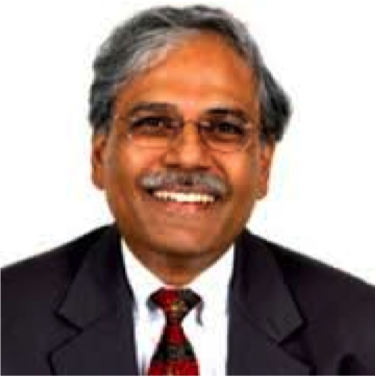
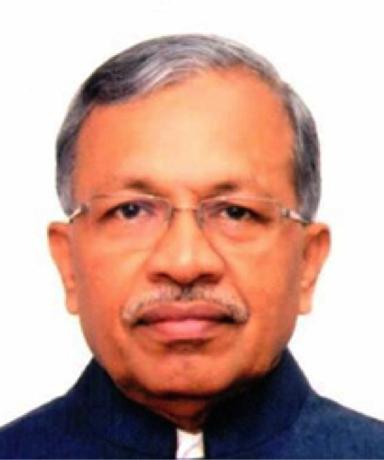
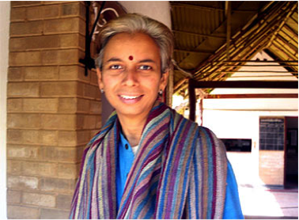
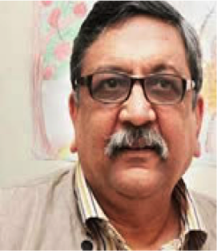

Team
Governing Board
Dr. Mihir Shah
Secretary SPS, President BRLF Former Member, Planning Commission, GoI and President, BRLF
Dr. Ramesh Chand

Director Full time member of Niti Ayog
Dr. T. Nanda Kumar, IAS (Retd)

Chair NDDB Board
Dr. Sushma Iyengar

Co- founder Kutch Mahila Vikas Sanghtan (KMVS), Co-founder Kutch Nav Nirman Abhiyan (KNNA), Co-founder- Khamir, Board, Member at PRADAN, AGM of Shaijivan
Independent Consultant
Dr. Gagan Sethi

Managing Trustee - CSJ
Dr. Kanchan Chopra
Former Director and Professor, Institute of Economic Growth, Delhi and Faculty, TERI
Bishwadeep Ghose
Director (Grants and Advocacy)
Dr. Vasant Saberwal
Independent Consultant
Research Advisory Committee
Executive Committee
-
Bishwadeep Ghose Governing Board Representative
-
Vasant Saberwal Governing Board Representative
-
Anshu Bhartia CEO- RRAN
-
Ravindra Program & Policy Head
-
Ashwini Chhatre Research Head